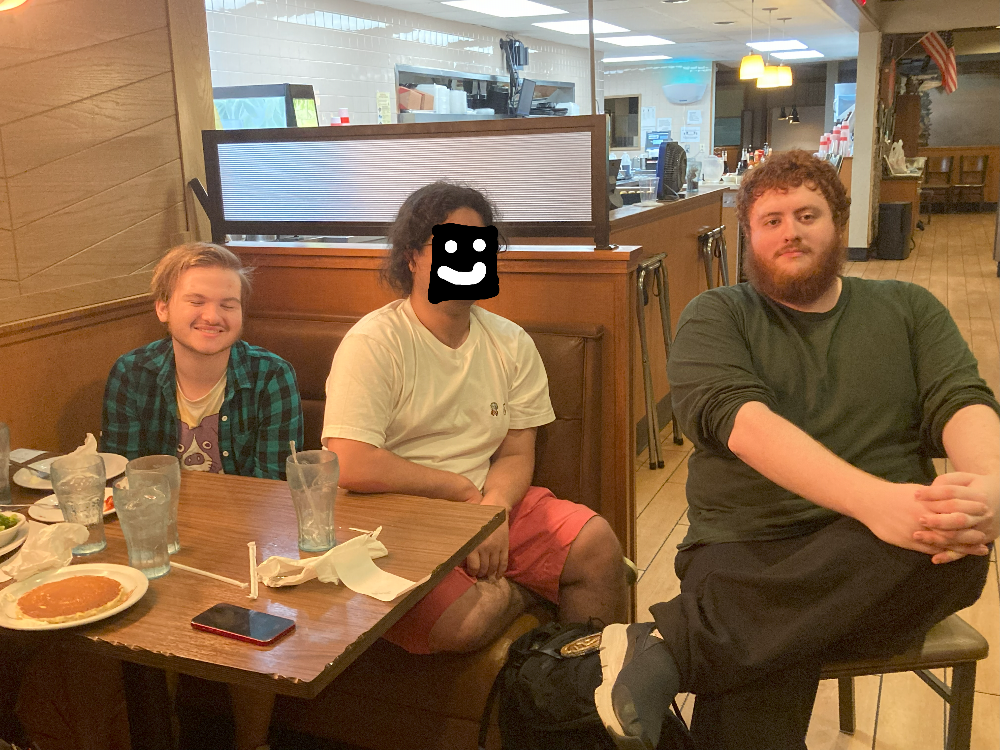
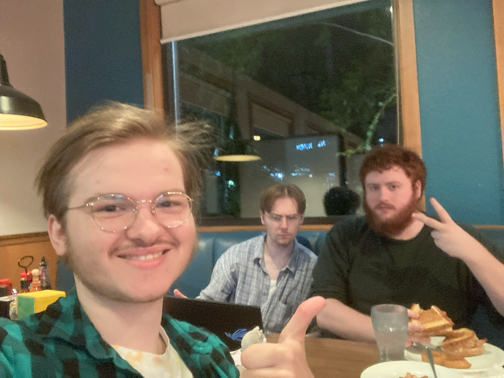

Houston Trip Summer 2024
Currently sitting at a Denny's, with M@, Kip, Tristan, and some others. Kip and them are playing Magic, while M@ and Tristan are talking about it. We've all been here for about 3 hours (it's 2:02AM at time of writing). I had a rough time earlier today, prior to getting here.
I love my friends, so much, so dearly. I feel so much love I am slightly nauseous. I look at my friends and they're radiant, beautiful, wonderful people, who I want only the best for. I'm so blessed to be able to be here, now. Be among them, with them. Have gotten to meet them. I feel so much gratitude and care to all those who've affected our lives thusly to meet. I wish this moment could last eternal. I feel like I've been waiting so long for something like this. We've been very close and dear through the midnight and early morning emotionally, though it's been hard, and talking about deep and hard things, but we understand each other, and we're here for each other. I feel as if I've nothing but love. This is it. It's real.

Me, Kip (redacted by request, they're giving a smirk under there), and M@, after Kip said "M@ is tall", after Tristan said we should say something to laugh. Tristan was taking the photo.

M@ and Tristan, while talking MAGIC the GATHERING.

Me, Tristan, and M@. Having a good time (: